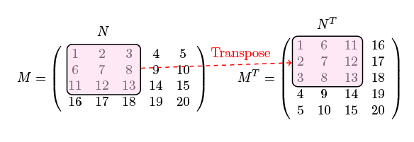

Avertissement pour les lecteurs: élèves et enseignants
Après l’introduction à Python viennent les cours d’introduction à python-numérique en numpy, aux tables de données sous pandas et à leur visualisation avec matplotlib.
Ces cours ne sont pas sous forme de diaporamas (comme ceux sur Python que vous venez d’avoir).
Cette année nous tentons une expérience, un nouveau format de cours, où les noteboooks prennent la forme de petites histoires …
Les notebooks déroulent des explications détaillées, qui soulèvent des questions et y répondent, le tout entrecoupés, parfois, de toutes petites choses à faire ou sur lesquelles on peut réfléchir rapidement.
Ces notebooks jouent deux rôles: celui de poly exécutable (que les élèves peuvent relire en autonomie à-la-Meuh) et celui d’un scénario de base lors des cours en présentiel.
L’idée serait que l’enseignant déroule les notebooks avec les élèves d’une manière interactive en instaurant un dialogue (rapide) avec la classe autour des questions en bleu qui jalonnent les notebooks.
L’idée n’est pas que les notebooks soient lus en autonomie par les élèves lors des cours en présentiel.
Il faut garder un rythme assez soutenu si on veut faire le tour des notobooks. Les questions qui ne sont pas vertes peuvent être regardées par les élèves à-la-maison, et les petites question de code peuvent être sautées ou faites par les élèves qui vont très vite. La correction étant dessous ces petites questions servent à ré-utiliser les fonctions.
UE12 - numpy : introduction¶
Cours #3 : Python et le numérique avec numpy
contextualisons un peu Python et le numérique¶
Alors maintenant vous avez des rudiments du langage de programmation Python, que ce soit grâce à vos années de prépa ou à l’introduction (rapide) que nous venons de faire ou pour toute autre raison.
Ce langage est plutôt élégant, simple à utiliser, il comporte tout un tas de structures de base pour ranger des données: dictionnaires, ensembles, listes, tuples … et les fonctions afférantes pour les manipuler. On essaie ?
l = [124, 1, 45, 67, 23, -17, 90, 45, -65]
l.sort()
print(l)
[-65, -17, 1, 23, 45, 45, 67, 90, 124]
La liste ressort triée, c’est beau ! Tout ceci est top: vous allez pouvoir réaliser les super TP de math1 et de data science en math2.
Qui dit data science dit données, jusque là vous nous suivez. Toutes ces données il va donc falloir les stocker quelque part à l’intérieur des programmes écrits en Python, pour les manipuler.
Si vous avez une grande, voire une très grande, quantité de données, il serait judicieux:
que leur stockage soit bien optimisé en espace mémoire et en temps d’accès à cet espace mémoire
que les calculs soient simples à appliquer et s’exécutent le plus rapide possible.
Nous sommes tous d’accord.
Alors ces données quelle forme vont-elles prendre ? Des idées ?
Oui vous pouvez avoir des matrices, des tables d’observations, des séries de mesures (par exemple temporelles), des images … on regarde des exemples ?
un exemple de matrice¶
Vous avez là une très jolie matrice (4 x 5) et sa transposée (5 x 4).

Comment pourrions nous représenter cette matrice en Python ? Une idée ? Essayez ?
# votre code ici (ne regardez pas dessous)
En voici une solution sous la forme d’un tuple de tuples:
matrice = (
(1, 2, 3, 4, 5),
(6, 7, 8, 9, 10),
(11, 12, 13, 14, 15),
(16, 17, 18, 19, 20)
)
ou une autre sous la forme d’une liste de listes
matrice = [
[1, 2, 3, 4, 5],
[6, 7, 8, 9, 10],
[11, 12, 13, 14, 15],
[16, 17, 18, 19, 20]
]
Quelle est la différence entre les deux solutions ?
Oui les tuples ne sont pas mutables.
Maintenant, si nous avions besoin de transposer cette matrice.
Naturellement nous serions capable de coder la fonction, mais franchement quand une fonction est à ce point utile, il doit bien exister une version, déjà codée par d’autres, qui de plus sera débuggée, testée par de nombreux autres utilisateurs … donc sûrement plus fiable que votre version et plus rapide à utiliser !
Premier principe de programmation: être le plus paresseux possible et toujours toujours toujours chercher avant de la coder si la fonction dont vous avez besoin n’existe pas déjà !
un exemple de table de données¶
Maintenant un autre exemple de données. Voici ci-dessous la table de passagers du (pourtant unsinkable) titanic. Oui oui cette table est disponible dans le domaine public (comme des tas de données), par exemple, là https://public.opendatasoft.com/explore/dataset/titanic-passengers/table).
Vous voyez en ligne les passagers et en colonnes les quelques informations que nous avons sur eux: numéro d’idenmtification, survie à l’accident, classe (première, seconde, troisième), nom, genre, age, SibSp, Parch, …
heu … SibSp et Parch ? Vous ne comprennez pas ce que c’est ? Oui nous sommes bien d’accord, ils auraient quand même pu choisir des noms un peu plus parlants (comme vous le faites sûrement toujours dans vos codes). Des indices ? SiblingsSpouse et ParentChildren. Et pour plus de details regardez là https://www.kaggle.com/c/titanic/data (mais pas pendant le cours).

un exemple de série temporelle¶
Cédons là à l’actualité. Voici la courbe des valeurs cumulées du nombre d’infections au covid en France entre janvier et août. Où trouve-t-on ce genre d’information ? Nous avons pris nos données là https://www.data.gouv.fr/fr/datasets/coronavirus-covid19-evolution-par-pays-et-dans-le-monde-maj-quotidienne/
Vous remarquez dans cette figure les abcisses qui sont des dates c’est bien une série temporelle.
{kind=link}
un exemple d’image¶
Encore un exemple de données ? Voici une belle photo, d’un endroit que vous allez apprendre à connaître (si on ne confine pas trop souvent …)
{kind=link}
que sont ces données ?¶
Je rappelle notre problème qui est de stocker ces données en mémoire afin de leur appliquer des fonctions.
Ces données semblent (à première vue) très différentes, mais nous allons souvent vouloir leur appliquer le même genre de fonctions (comme rechercher le passager le plus agé du titanic, les pixels de la couleur la plus foncée, les maxima des lignes de la matrice).
Ces données vous font-elles penser à quelque chose ? Des idéees ?
Oui bien sûr à des tableaux !
la matrice est un tableau de 5 lignes et 4 colonnes, donc une taille (4 x 5)
la table des passagers du Titanic est un tableau de 891 lignes et de 9 colonnes (891 x 9)
l’image couleur, en codage RGB rouge-vert-bleu, est constituée de trois tables de couleurs primaires de 533 lignes et de 800 colonnes (grâce auxquelles votre écran va reconstituer une jolie image en couleur).
la série temporelle sera une suite de valeurs chacune repérée par une date
Les structures de données de Python sont très bien mais, malheureusement, elles ne sont pas du tout adaptées à stocker et manipuler les tableaux de ce genre.
Pour pallier à ce problème, depuis 2006 une librairie numérique appelée numpy est développée.
Il a même été proposé au concepteur de Python de l’intégrer dans son langage, comme la structure de données de tableaux Python, mais celui-ci a refusé pour des soucis de maintenance de code.
numpy est une très bonne librarie numérique de manipulation de tableaux multi-dimensionnels qui, elle, comporte toutes les fonctionnalités numériques dont vous avez besoin.
numpy n’est (définitivement) pas très facile à utiliser contrairement à Python, et si elle s’est imposée comme LA librarie numérique incontournable de Python, c’est parce qu’il n’en existe pas (encore) de meilleure, donc c’est naturellement celle-ci que les mines ont choisi de vous apprendre.
numpy est donc considérée comme LA bibliothèque qui permet d’étendre le langage de programmation Python avec la manipulation de tableaux multidimensionnels.
C’est une bibliothèque logicielle libre et open source. Elle va vous fournir des tas de fonctions de création et manipulation de tableaux.
numpy est la base de SciPy (ScientificPython) qui est un regroupement de bibliothèques Python pour le calcul scientifique.
apprenons à faire des tableaux numpy.array¶
Puisque nous allons parler ici de la librarie numpy, importons là. Et donnons lui, par convention, son petit-nom np qui est le petit-nom standard pour numpy: c’est sous ce nom que l’utiliseront la plupart des codes existants, donc utilisez-le aussi !
import numpy as np
Maintenant nous allons créer un tableau et regarder les informations qu’il contient.
le type de donnée numpy.ndarray¶
numpy possède donc un type de tableau appelé numpy.ndarray. Alors effectivement ici np.ndarray serait plus juste mais nous allons écrire numpy. (et non np.) dans nos explications pour plus de clarté.
Voilà le type numpy.ndarray:
np.ndarray
numpy.ndarray
Ce type est une structure de donnée, qui va comporter toutes les fonctions nous permettant de construire et de manipuler des tableaux multi-dimentionnels. Super, on essaie ça.
création de notre premier np.ndarray¶
Pour construire un tableau, de quelles informations peut-t-on avoir besoin ?
de sa forme, disons par exemple que le tableau est une matrice 4 x 5.
du type des éléments que
numpyva pouvoir inférer (deviner) à partir des valeurs initiales fourniesdes valeurs, disons que cette matrice est celle que nous avons vu en début du notebook et qui s’appelle
matrice
La voila:
matrice
[[1, 2, 3, 4, 5], [6, 7, 8, 9, 10], [11, 12, 13, 14, 15], [16, 17, 18, 19, 20]]
Pour construire un tableau on n’utilise pas directement la fonction de bas niveau (le constructeur) numpy.ndarray.
D’autres fonctions sont définies pour cela, comme numpy.array, numpy.zeros et numpy.empty.
Utilisons la première fonction. Elle initialise ses éléments à partir d’un objet décrivant un tableau, par exemple la liste de listes décrivant la matrice 4 x 5 ci-dessus.
Comment savons nous tout cela ? Grâce au help sur numpy.ndarray !
# pour avoir de l'aide dans un notebook,
# le plus simple c'est avec le ? comme ceci
np.array?
# l'évaluation de cette cellule déclenche l'affichage de l'aide
# cliquez sur la croix en haut à droite pour effacer le pop-up
Dès que vous avez un doute sur quelque chose, utilisez le help !
Disons que la fonction numpy.array peut être vue comme la manière de convertir “quelque chose qui en Python décrit un tableau” en une structure de donnée de type numpy.ndarray.
mat = np.array(matrice)
et voilà à quoi ressemble le résultat
mat
array([[ 1, 2, 3, 4, 5],
[ 6, 7, 8, 9, 10],
[11, 12, 13, 14, 15],
[16, 17, 18, 19, 20]])
Voila mat. Elle est super ! Et nous n’avons même pas eu à indiquer ni la forme du tableau, numpy l’a déduite de la forme de la liste de listes passée en argument (heureusement) ni le type des éléments, numpy l’a déterminé à partir des valeurs initiales (ouf).
Maintenant à vous de jouer. Créer la matrice $\begin{pmatrix} 5.2 & 9 & 2 \ 6 & 8 & 1 \ 0 & 3 & -7 \ -5 & -8 & 7 \end{pmatrix}$. Appelez la ma_mat
# votre code ici (correction ci-dessous)
ma_mat = np.array([[5.2, 9, 2], [6, 8, 1], [0, 3, -7], [-5, -8, 7]])
ma_mat
array([[ 5.2, 9. , 2. ],
[ 6. , 8. , 1. ],
[ 0. , 3. , -7. ],
[-5. , -8. , 7. ]])
Essayer de créer un tableau unidimensionnel que vous appelez vec. Mettez lui les entiers pairs de 0 à 12 compris.
# votre code ici
Oui, on peut bien sûr aussi créer un tableau de dimension 1.
vec = np.array([i for i in range(13) if i%2==0])
vec
array([ 0, 2, 4, 6, 8, 10, 12])
le type des éléments d’un tableau numpy.ndarray¶
Notre belle matrice, dans la variable Python mat est de type numpy.ndarray.
On va lui demander quel est le type de ses éléments.
mat.dtype
dtype('int64')
Ok des entiers codés sur 64 bits (on y reviendra).
Maintenant à vous de jouer. Regardez le type des éléments de votre matrice ma_mat.
# votre code ici la correction ci-dessous
ma_mat.dtype
dtype('float64')
Bon dans les deux cas numpy a vu large ! Il a choisi d’encoder ses entiers sur 64 bits et leur permettre d’être négatifs. Et cela pour stocker des nombres tous positifs entre 1 et 20…
64 bits ? ca ne vous dit plus grand chose ? au cas où, un petit rappel
le plus petit élément de la mémoire est le bit qui ne prend que deux valeurs 0 et 1
le regroupement de 8 bits forme un
octet(oubyteen anglais)la quantité de mémoire peut s’exprimer en nombres d’
octets
Combien notre matrice mat occupe-t-elle d’octets en mémoire ?
Il y a 4 x 5 éléments, chacun sur 64 bits, donc sur 8 octets. On a 4x5x8=160 octets.
Si nous sommes sûrs que nos entiers seront toujours positifs ou nuls et toujours strictements inférieurs à 256 (vous nous voyez venir ?) de combien d’octets aurons-nous besoin ? (la couleur est saumon pas-très-frais: c’est donc une question avancée)
Oui il suffira d’avoir des entiers non signés sur 8 bits ! (non signés afin de récupérer le bit qui sert normalement à indiquer le signe pour stocker un bit de la valeur).
Les valeurs iront de 00000000 soit 0 à 11111111 soit 255 ($2^8-1$).
Ce type s’appelle numpy.uint8 (u pour unsigned).
avec n bits
on représente $2^n$ valeurs entières
soit des entiers signés $\in [ -2^{n-1}$, $2^{n-1}-1]$
soit des entiers non signés $\in [0, 2^n-1]$
Alors indiquons donc à numpy.array, à la construction du tableau, que nous voulons ce type précis pour nos éléments.
Nous faisons cela, grâce au paramètre dtype de la fonction numpy.array
mat8 = np.array(matrice, dtype=np.uint8) # vous pouvez aussi dire dtype='uint8' mais c'est moins joli
mat8.dtype
dtype('uint8')
Combien notre tableau occupe-t-il en mémoire maintenant … alors oui on peut le calculer mais nous rappelons la première règle de la programmation être le plus paresseux possible donc ne jamais calculer quelque chose qui est déjà connu !
Nous allons donc demander directement à mat8 de nous indiquer sa taille en octets (1 octet = 8 bits) parce que i) on est sûr qu’il la connait parfaitement et ii) il ne fera pas d’erreur en nous l’indiquant alors que nous pourrions faire des erreurs en la calculant (oui en fin de journée un peu fatigué et hop on oublie de multiplier par le nombre de lignes … et après on a un bug).
On utilise pour cela un attribut (ou encore champ) de l’objet mat8. Ce n’est pas une fonction, juste un champ à consulter qui s’appelle numpy.ndarray.nbytes (bytes==octets)
mat8.nbytes
20
Oui 20 octets 1 par élément !
Maintenant à vous de jouer: Re-construisez votre matrice ma_mat8 en lui imposant le type uint8 pour ses éléments. Affichez-là.
# votre code ici
ma_mat8 = np.array([[5.2, 9, 2], [6, 8, 1], [0, 3, -7], [-5, -8, 7]], dtype=np.uint8)
ma_mat8
array([[ 5, 9, 2],
[ 6, 8, 1],
[ 0, 3, 249],
[251, 248, 7]], dtype=uint8)
Vous voyez un problème ? Oui bien sûr: vous avez demandé (i) que vos éléments soient entre 0 et 255 et (ii) qu’ils soient des entiers. Il vous obéit et convertit vos valeurs !
Nous reviendrons là dessus plus tard, mais numpy fait en sorte que tous les éléments du tableau tiennent dans la taille que vous avez demandé et aient tous le même type (on ne mélange pas des int et des float).
A partir de l’objet numpy.ndarray on peut accéder à de nombreuses autres informations sur le tableau.
la taille size du tableau¶
Si on veut connaître le nombre d’éléments du tableau, on utilise le champ size
mat8.size
20
taille des éléments en mémoire itemsize et nbytes¶
Si on veut connaître la taille qu’occupe en mémoire (en octets) chaque élément, on utilise itemsize
mat8.itemsize
1
Si on veut connaître le nombre d’octets total qu’occupe notre tableau en mémoire (on l’a déjà vu), on utilise nbytes.
mat8.nbytes
20
Maintenant dégourdissez vous les doigts, consultez (i) la taille, (i) la taille des éléments, (iii) le nombre total d’octets et (iv) le type des éléments de votre matrice ma_mat8
# votre code ici
la forme shape et la dimension dimdu tableau¶
Si on veut connaître la forme d’un tableau, on utilise ? Oui shape !
mat.shape
(4, 5)
Et enfin, si on veut connaître la dimension du tableau (non on ne la calcule pas avec la longueur de la liste indiquant la forme) ! On utilise dim
mat.ndim == len(mat.shape)
True
Maintenant à vous de jouer: Demandez la forme et la dimension de votre ma_mat. Oui je sais c’est juste au dessus mais c’est pour que vous utilisiez au moins une fois ces deux fonctions.
# votre code ici
on récapitule les méthodes des ndarrays¶
Un petit tableau pour récapituler les méthodes des numpy.ndarray (on les a déjà toutes vues, vous pouvez passer très rapidement).
les méthodes |
ce qu’elles font |
|---|---|
|
la forme du tableau (tuple) |
|
le nombre de dimensions du tableau |
|
le type des éléments |
|
le nombre d’éléments du tableau |
|
la taille en octet d’un élément |
|
la taille totale du tableau sous-jacent en octet |
création d’un tableau de zéros numpy.zeros¶
Il existe une deuxième fonction pour créer des tableaux dont les éléments sont initialisés à 0. Qui s’appelle numpy.zeros. Alors là vous allez devoir donner la forme de votre tableau, la fonction ne peut pas la deviner … comme elle le faisait dans l’exemple précécent.
zorro = np.zeros(shape=(4, 5))
zorro
array([[0., 0., 0., 0., 0.],
[0., 0., 0., 0., 0.],
[0., 0., 0., 0., 0.],
[0., 0., 0., 0., 0.]])
Dans votre idée, vu l’affichage de zorro, quel est le type choisi ici, par défaut, par numpy ?
# votre code ici
Encore à vous de jouer ! Créer une matrice de 6 lignes et 2 colonnes de zéros entiers de simples int et afficher le type choisi.
# votre code ici
La correction ci-dessous.
np.zeros(shape=(6, 2), dtype=int).dtype
dtype('int64')
création d’un tableau de rien numpy.empty¶
Il existe une fonction qui permet de ne pas initialiser les éléments du tableau. Alors bien sûr on se pose des tas des questions, au moins deux: A quoi ca sert ? Dans quel cas est-il intéressant de l’utiliser ? Qu’en pensez-vous ?
A quoi ca sert ? À ne pas perdre de temps à initialiser ! Quand votre tableau est très très très grand, faire mettre inutilement une valeur dans chaque case par numpy est une très très très grande perte de temps. Bien sûr, en traitement de données, surtout quand on a beaucoup de données, on essaie de ne pas faire de choses qui ne servent à rien.
Dans quels cas ? Et bien par exemple vous savez que vous allez initialiser ces éléments par la suite.
Allons-y. Faisons un tableau non-initialisé de taille 3 x 6 et demandons lui comme type des éléments des entiers 8 bits signés (par exemple).
rien = np.empty(shape=(3, 6), dtype=np.int8)
C’est le moment où vous vous dites, à juste titre, que pourtant ces cases vont exister en mémoire. Oui bien sûr. Donc vous allez pouvoir regarder ce qu’elles contiennent ! Oui tout à fait ! Mais alors que pensez-vous trouver comme valeur dans une case non initialisée ?
Ben non pas 0, sauf si … sauf si c’est la valeur qui se trouvait dans la mémoire avant que cette case n’y soit crée, pur hasard.
Affichez votre tableau rien
rien
array([[-48, -28, -10, -68, 52, 86],
[ 0, 0, 0, 0, 0, 0],
[ 0, 0, 0, 0, 32, 0]], dtype=int8)
Et oui vous voyez que vous avez n’importe quoi comme valeurs: numpy laisse simplement la mémoire comme elle était avant la création du tableau. Puisque toute case mémoire contient soit un 0 soit un 1, le contenu des cases est mis dans le type des éléments de votre tableau, avec 8 bits je vais avoir des nombres compris entre -128 à 127.
on récapitule les fonctions de créationde numpy.ndarray¶
les fonctions que nous avons vues jusqu’à présent
| les méthodes | ce qu’elles font |
| ————————— | ——————— ———————- |
| numpy.array | renvoie la version ndarray d’un tableau existant |
| numpy.empty | renvoie un ndarray vide i.e. sans initialiser ses éléments |
| numpy.zeros | renvoie un ndarray rempli de 0. (float) |
| numpy.ones | renvoie un ndarray rempli de 1. (float) |
Les cours étant très condensés, les quiz et les exercices sont plutôt à faire en temps réel avec les élèves ou en fin de séance si il reste du temps
quiz¶
considérons le tableau np.array([[1, 2, 3], [ 4, 5, 6]])
quelle est sa forme
(2, 3)ou(3, 2)quelle est la taille de ce tableau
2ou6
Qu’obtient-on si on fait:
np.array([256, 257, 258]).astype('uint8')?[256, 257, 258]ou[0, 1, 2]
Que donne la méthode size d’un numpy.ndarray ?
le nombre d'élémentsoula taille du tableauoula taille d'un élément
quelques petits exercices¶
on s’échauffe¶
Créez une matrice de 1 de taille 2 x 3 x 4 et affichez là. Qu’est-ce-que vous obtenez ?
# votre code ici
np.ones(shape=(2, 3, 4))
array([[[1., 1., 1., 1.],
[1., 1., 1., 1.],
[1., 1., 1., 1.]],
[[1., 1., 1., 1.],
[1., 1., 1., 1.],
[1., 1., 1., 1.]]])
comparaison des temps de constructions de tableaux initialisés et non¶
Pour comparer des temps de calcul, nous allons utiliser une fonction (un peu magique) des notebooks qui s’appelle timeit et qui va appeler de nombreuses fois le calcul et faire la moyenne des temps d’exécution.
En voici un exemple l’exécution de la cellule suivante vous donnera la moyenne des temps d’exécution d’un certain nombre d’exécution du code 1 + 1
Temps calculé sur l’exécution de la ligne (avec un seul %)
%timeit 1 + 1
7.38 ns ± 0.0225 ns per loop (mean ± std. dev. of 7 runs, 100000000 loops each)
Temps calculé sur l’exécution de toute la cellule (avec deux %%)
%%timeit
1 + 1
7.36 ns ± 0.000645 ns per loop (mean ± std. dev. of 7 runs, 100000000 loops each)
Mon ordi met 6.12 nano-secondes.
Maintenant utiliser ce calcul des temps d’exécution pour comparer:
la création d’un
numpy.ndarrayà partir d’une liste Python comportant 10.000 floats initialisés à 0.la création d’un
numpy.ndarrayde 10.000 éléments initialisés à 0.la création d’un
numpy.ndarrayde 10.000 éléments non-initialisés.
Pour la version Python créez la liste Python avant de calculer le temps de calcul.
# votre code ici
# votre code ici
# votre code ici
# votre code ici
Qu’en concluez-vous ?